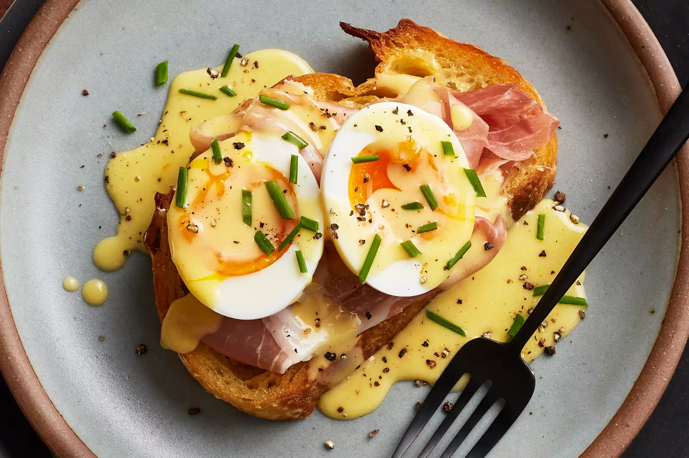

Home
Royal egg boi

It's said that chef Charles Ranhofer came up with the combination in the 1860s when Mrs. LeGrand Benedict, one of his regular diners, grew tired of the menu and wanted something new. His recipe, which he dubbed Eggs a la Benedict, was published in his cookbook in 1894.
- Hollandaise Sauce – the traditional eggs benedict sauce
- English Muffins – 2 halved English muffins make 4 eggs benedict
- Unsalted butter – for toasting the English muffins
- Canadian Bacon, or substitute with thinly shaved ham, or Crispy Bacon
- Eggs – use large grade AA eggs and super fresh eggs are best for holding their shape
- Distilled white vinegar – added to the water for poaching eggs
- Cayenne Pepper, to garnish
- Garnish – with Chives or dill
- Make the Hollandaise Sauce: cook according to our hollandaise recipe instructions. Cover to keep warm. Add a little hot water to thin if needed.
- Prep for Poached Eggs: Place a pot of water on the stove for making poached eggs and bring it to barely a simmer.
- Sauté meat: In a large skillet, sauté meat until warm and golden then transfer to a plate, cover to keep warm.
- Toast English muffins: Melt 2 tsp butter on the same skillet and add English muffins cut-side down. Toast until golden brown. Turn off the heat and leave muffins in the pan to keep warm.
- Poach Eggs: Once water is barely simmering, poach 4 eggs according to our easy poached eggs recipe.
- Assemble: Place English muffin halves on serving plates, cut side up, and top with your meat. Place the egg over the meat. Pour the hollandaise sauce over the eggs, sprinkle the top with cayenne pepper and garnish with chives. Serve immediately.